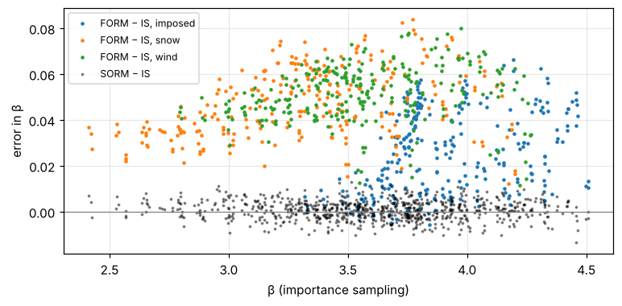
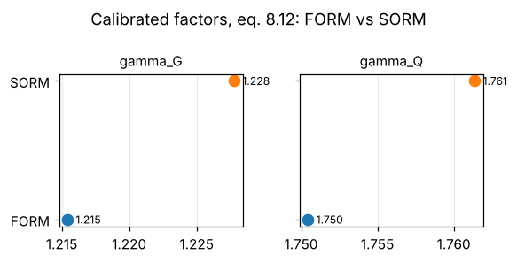

18. Lesson 6 — How good is FORM? Verification and the method decision#
Every number of lessons 4 and 5 rests on FORM. Lesson 2 showed that the product of a lognormal model uncertainty and a Gumbel load curves the failure surface and makes FORM optimistic by a few hundredths. The calibration limit state contains exactly such products — on both sides: \(z\,\Theta_R R\) and \(\Theta_E\,\Theta_Q Q\). This lesson quantifies the effect over the whole model and shows what it does to the calibrated factors.
Tools (all in codecal.reliability):
SORM — Breitung’s curvature correction, about 70 % extra cost;
importance sampling around the FORM design point — a few thousand samples per situation give β to ±0.01, independent of any linearisation.
import os
import sys
import time
import numpy as np
import pandas as pd
try:
import codecal as cc
except ImportError:
sys.path.insert(0, os.path.abspath('..'))
import codecal as cc
from codecal import plots
from codecal.plots import Figure
FIG = 'figures'
os.makedirs(FIG, exist_ok=True)
pd.set_option('display.width', 120)
def save(fig, name):
"""Save a figure next to the lesson and show it (inline in Jupyter/Spyder)."""
fig.savefig(os.path.join(FIG, name), dpi=150, bbox_inches='tight')
try:
from IPython.display import display
display(fig)
except ImportError: # plain python: the PNG in figures/ is the output
pass
model = cc.ahg_model()
situations = model.design_situations()
18.1. 1. FORM, SORM and importance sampling for every design situation#
For each of the 810 situations: FORM (as in the sweep), SORM at the same design point, and importance sampling with 20 000 samples.
t0 = time.time()
rows = []
for s in situations:
z = s.design_parameter(cc.START_VALUES, '8.12')
ls = s.limit_state(z)
res = cc.form(ls)
b_sorm, kappa = cc.sorm(ls, res)
isr = cc.importance_sampling(ls, res, n=20_000, seed=len(rows))
rows.append({'mode': s.mode.name, 'load': s.load.name, 'a_G': s.a_G, 'a_Q': s.a_Q,
'beta_form': res.beta, 'beta_sorm': b_sorm, 'beta_is': isr.beta, 'se_is': isr.se_beta,
'kappa_min': kappa.min(), 'dominant': s.variable_names[int(np.argmax(np.abs(res.alpha)))]})
ver = pd.DataFrame(rows)
print(f"{len(ver)} situations verified in {time.time() - t0:.0f} s")
ver['form-is'] = ver.beta_form - ver.beta_is
ver['sorm-is'] = ver.beta_sorm - ver.beta_is
print(ver[['form-is', 'sorm-is', 'se_is']].describe().round(4).to_string())
810 situations verified in 4 s
form-is sorm-is se_is
count 810.0000 810.0000 810.0000
mean 0.0414 0.0007 0.0039
std 0.0189 0.0042 0.0002
min -0.0057 -0.0135 0.0034
25% 0.0299 -0.0021 0.0037
50% 0.0437 0.0008 0.0039
75% 0.0555 0.0034 0.0040
max 0.0838 0.0130 0.0070
FORM overestimates β by about 0.04 on average, up to 0.09; SORM agrees with the sampling estimate to within its standard error. The bias is not uniform — it depends on which variable dominates:
print(ver.groupby('dominant')[['form-is', 'sorm-is']].agg(['mean', 'max', 'count']).round(3).to_string())
print()
print(ver.groupby('load')[['form-is', 'sorm-is']].mean().round(3).to_string())
fig = Figure(figsize=(8, 3.6))
ax = fig.subplots()
for load, grp in ver.groupby('load'):
ax.plot(grp.beta_is, grp['form-is'], '.', ms=4, label=f'FORM − IS, {load}')
ax.plot(ver.beta_is, ver['sorm-is'], 'k.', ms=3, alpha=0.4, label='SORM − IS')
ax.axhline(0, color='grey', lw=0.8)
ax.set_xlabel('β (importance sampling)')
ax.set_ylabel('error in β')
ax.grid(alpha=0.3)
ax.legend(fontsize=8)
save(fig, 'lesson06_form_error.png')
form-is sorm-is
mean max count mean max count
dominant
Q 0.015 0.050 165 0.001 0.010 165
R 0.053 0.074 96 0.001 0.013 96
Θ_E 0.063 0.084 24 -0.002 0.009 24
Θ_Q 0.044 0.071 246 0.001 0.012 246
Θ_R 0.049 0.080 279 0.000 0.012 279
form-is sorm-is
load
imposed 0.025 0.001
snow 0.048 0.001
wind 0.051 0.000

Situations dominated by a lognormal variable — the model uncertainties \(\Theta_E\), \(\Theta_R\), \(\Theta_Q\) and the strengths — carry the largest first-order error (0.05–0.06 in β); those dominated by the Gumbel load itself the smallest. Per load: wind and snow ≈ 0.05, imposed ≈ 0.025. In β terms the AHG study is systematically optimistic by ≈ 0.04; the next section shows what that is worth in partial factors.
18.2. 2. Calibrating with SORM instead of FORM#
method='sorm' applies the correction inside every objective evaluation.
t0 = time.time()
cal_form = cc.calibrate(model, ('gamma_G', 'gamma_Q'), equation='8.12', method='form', verbose=False)
cal_sorm = cc.calibrate(model, ('gamma_G', 'gamma_Q'), equation='8.12', method='sorm', verbose=False)
print(f"two calibrations in {time.time() - t0:.0f} s\n")
print("FORM:", cal_form, sep='\n')
print("\nSORM:", cal_sorm, sep='\n')
save(plots.plot_gamma_comparison({'FORM': cal_form, 'SORM': cal_sorm},
title='Calibrated factors, eq. 8.12: FORM vs SORM'),
'lesson06_gamma_form_vs_sorm.png')
two calibrations in 43 s
FORM:
calibrated gamma_G, gamma_Q (β_t = 3.8)
gamma_G 1.215
gamma_Q 1.750
weighted-mean β 3.741 → 3.809
objective 1.366e-01 (16 evaluations)
SORM:
calibrated gamma_G, gamma_Q (β_t = 3.8)
gamma_G 1.228
gamma_Q 1.761
weighted-mean β 3.705 → 3.808
objective 1.406e-01 (17 evaluations)

The status-quo weighted mean drops from 3.74 (FORM) to 3.70 (SORM), and the calibrated factors rise by about 0.01–0.015 each. Which method a code committee adopts is a decision — the target β itself was set with FORM in mind — but it has to be a conscious one, and the size of the effect should be known. That is what this lesson is for.
18.3. 3. Sampling as the final arbiter#
When in doubt, importance sampling with more samples settles the question for any single situation. Steel bending under wind, the grid point closest to the situation of lesson 3:
s = next(x for x in situations if x.mode.name == 'Steel bending' and x.load.name == 'wind'
and abs(x.a_G - 0.8) < 1e-9 and abs(x.a_Q - 0.5) < 0.03)
z = s.design_parameter(cc.START_VALUES, '8.12')
ls = s.limit_state(z)
res = cc.form(ls)
for n in (2_000, 20_000, 200_000):
isr = cc.importance_sampling(ls, res, n=n, seed=7)
print(f"importance sampling, n = {n:7,d}: β = {isr.beta:.4f} ± {isr.se_beta:.4f}")
print(f"FORM {res.beta:.4f}, SORM {cc.sorm(ls, res)[0]:.4f}")
mc = cc.monte_carlo(ls, n=2_000_000, seed=7)
print(f"crude Monte Carlo, n = 2,000,000: β = {mc.beta:.4f} ± {mc.se_beta:.4f}")
importance sampling, n = 2,000: β = 3.4948 ± 0.0122
importance sampling, n = 20,000: β = 3.4849 ± 0.0040
importance sampling, n = 200,000: β = 3.4755 ± 0.0012
FORM 3.5196, SORM 3.4776
crude Monte Carlo, n = 2,000,000: β = 3.4808 ± 0.0120
18.4. Exercises#
Which single CoV of the model would you reduce to make FORM accurate enough? Try halving the CoV of the wind model uncertainty and rerun section 1 for the wind situations.
The sensitivity factor of the dominant variable is often above 0.7 for wind. Compare with the fixed α = 0.7 of EN 1990 Annex C: in which situations would the design-value format be conservative, in which not?
Repeat section 2 for eq. 8.13 with ξ free. Does SORM change ξ?